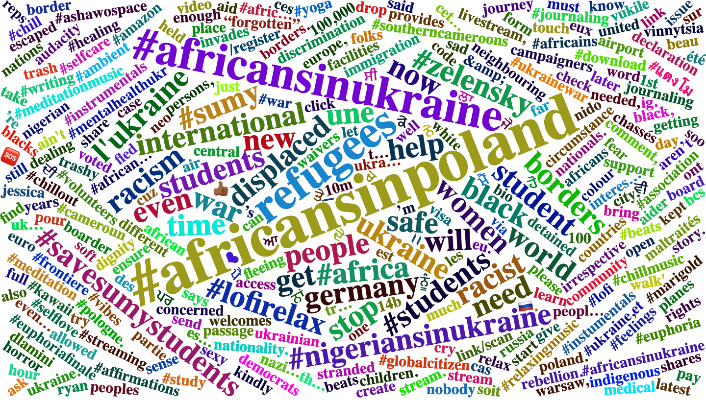
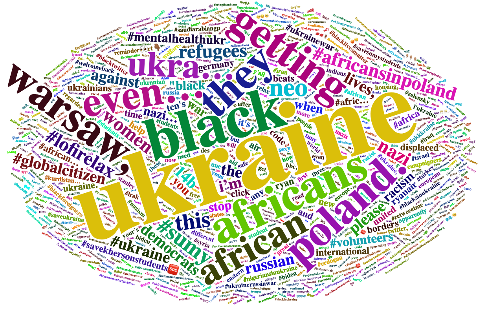

Through the datascraping, a wordcloud has been generated to show frequent words that people have used in their tweets.
The most frequent words shown are #africansinpoland, refugees, and #africansinukraine. Another thing that is often noticed is the use of a lot of Indian words, showing the concern for fellow Indians in Ukraine. Considering the fact that there was over 15,000 people in India studying in Ukraine, there is a considerable amount of concern for these students. This data can further help us to analyze sentiment, recognize trends, and observe the global impact of this phenomenon. For instance, note the prescence of non-english words throughout the word cloud.
Looking at the wordcloud above, a lot of the words are on the negative side, talking about rebellion, displaced, racism, detained, discrimination, etc. There are some mentions of Nazi as well. Overall, this shows that the people of color students at Ukraine are facing hardships right now.
